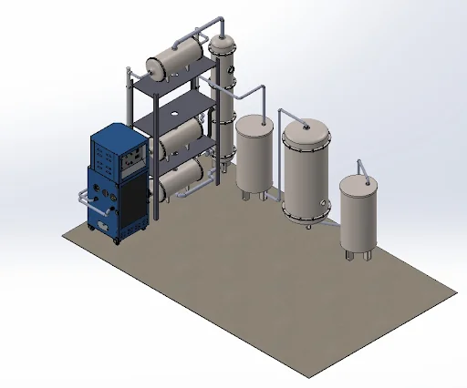
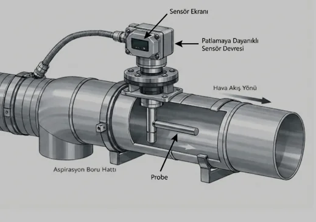
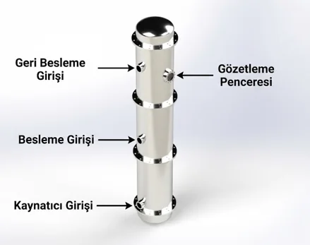
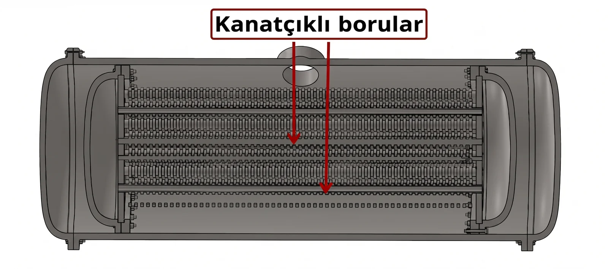
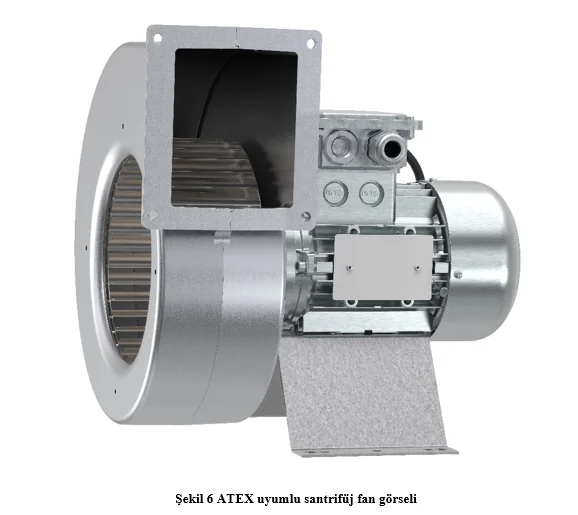
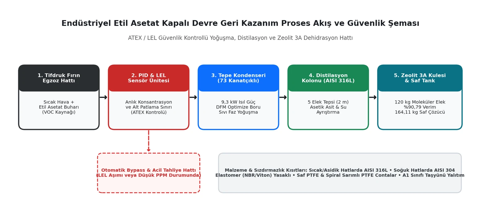

🔍 Click to enlarge



Did you know that releasing hundreds of kilograms of expensive industrial solvent into the atmosphere every day not only creates a massive drain on operating budgets but also imposes a severe environmental emission burden?
In this engineering study, we examine the complete thermodynamic and mechanical design of a cost-effective, ATEX-compliant process machine that recovers volatile and flammable ethyl acetate solvent—widely used in the flexible packaging industry—from waste vapor back into a pure liquid phase.
This project presents an integrated process machine designed to recover ethyl acetate evaporated during solvent-based rotogravure printing operations. The system combines a vapor collection line, finned-tube overhead condenser, sieve-tray distillation column, single-tower Zeolite 3A molecular sieve dehydration bed, and smart PID/LEL sensor management. From a single 200-liter (180.4 kg) contaminated batch, the system successfully recovers 164.11 kg of pure ethyl acetate (90.79% efficiency), reducing VOC emissions to near zero and turning solvent consumption into a closed-loop internal resource.
In rotogravure packaging printing, highly volatile ethyl acetate is favored for rapid ink drying. However, this volatility introduces three critical engineering challenges in drying ovens:

Figure 1: Closed-loop ethyl acetate recovery process flow, ATEX/LEL safety bypass line, and material constraints (Click image to enlarge).
A systematic thermodynamic and mechanical design methodology was executed across all process units:
Performance metrics of the integrated recovery system confirm both technical and financial viability:
In this study, the complete thermodynamic sizing, mechanical design, and DFM optimization of an industrial ethyl acetate solvent recovery machine operating under strict chemical and explosive constraints were successfully completed.
In future development phases, R&D studies on Topology Optimization are planned to further reduce structural chassis weight and manufacturing costs while preserving full thermal and structural integrity.